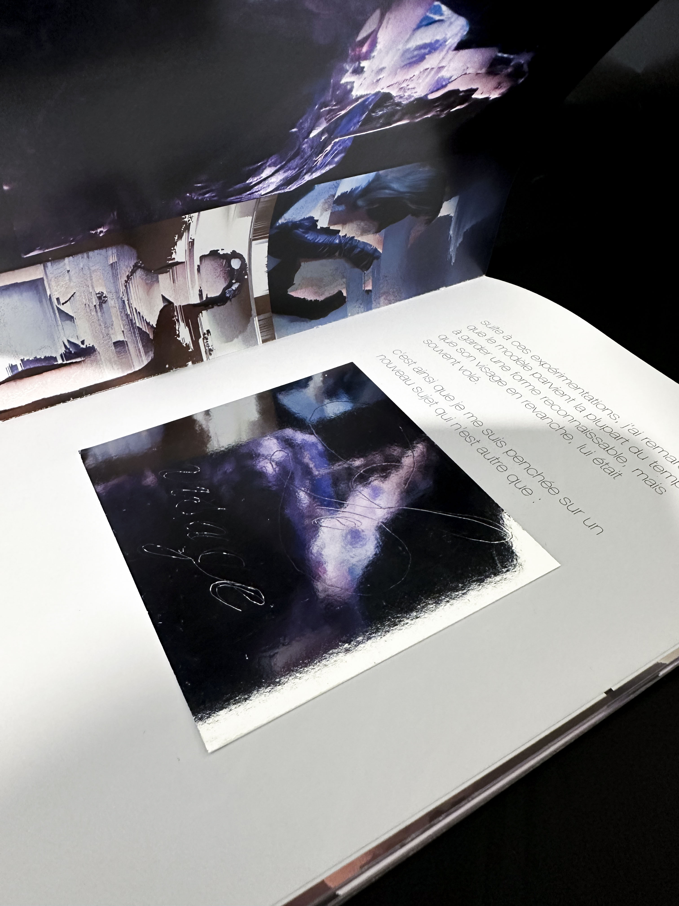
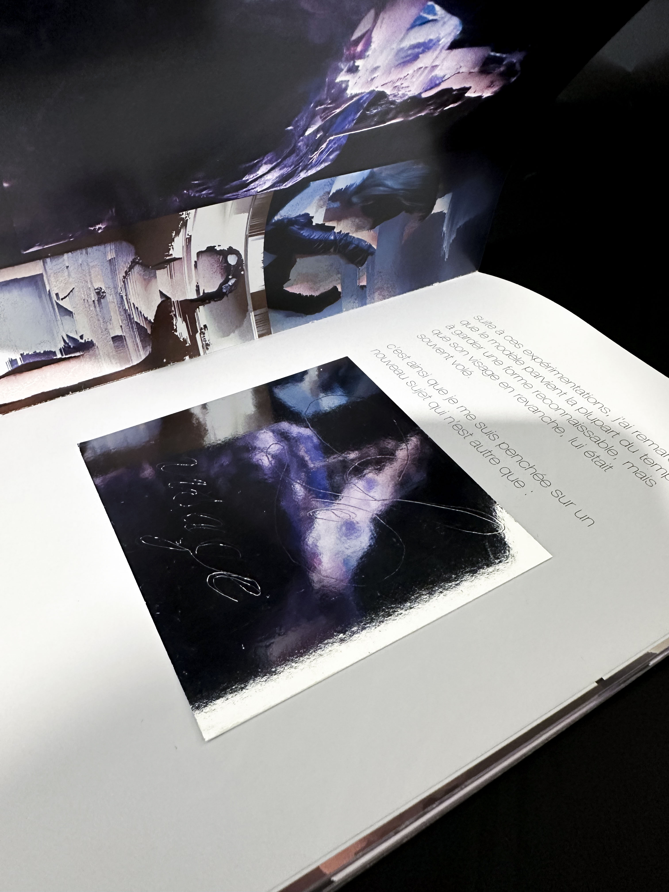
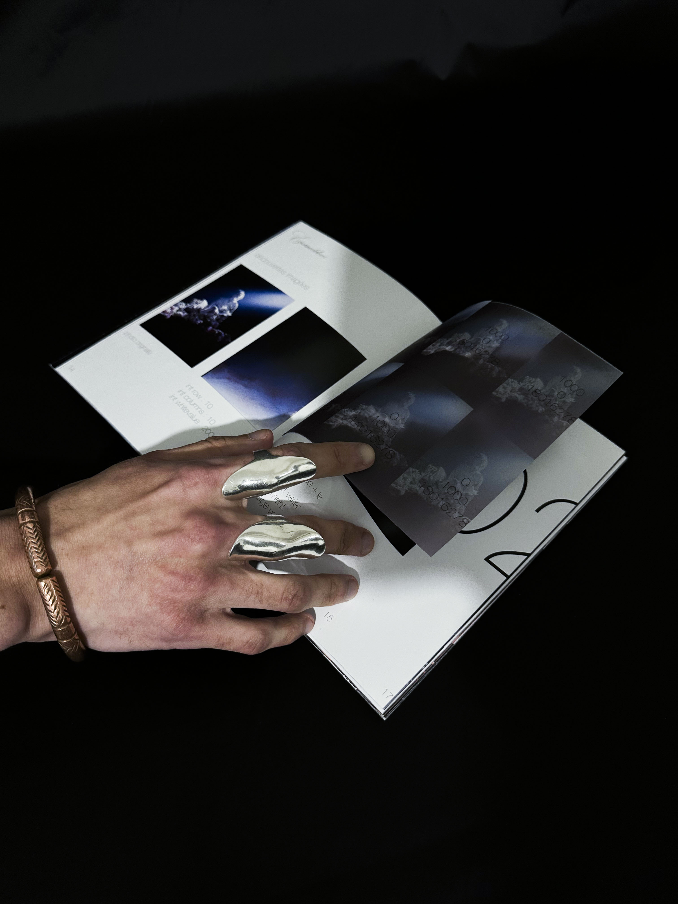
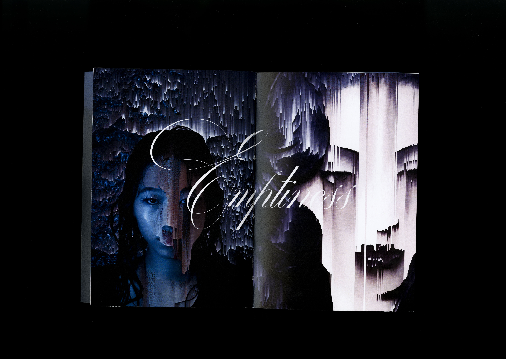
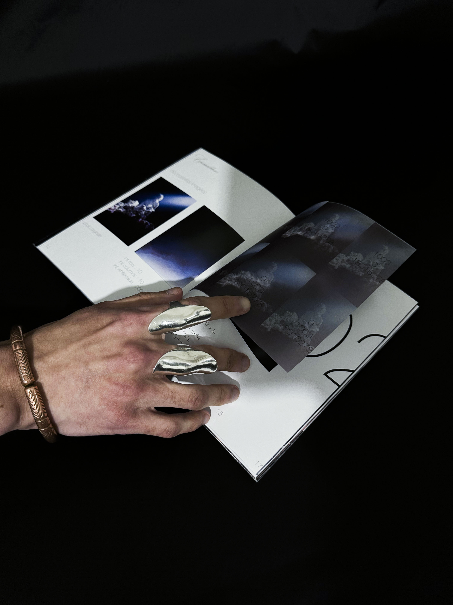
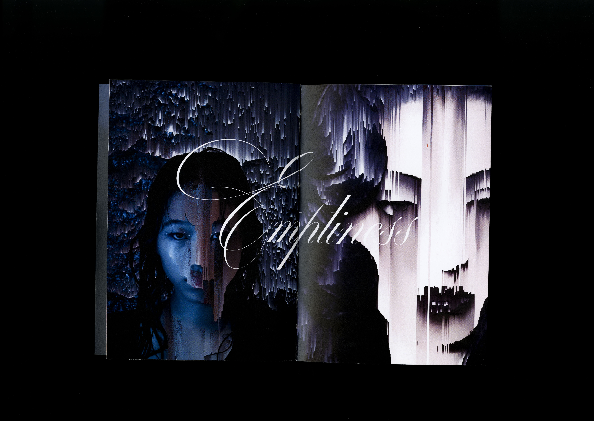

Projet d’édition de 65 pages dont j’ai assuré la mise
en page et l’assemblage
par une reliure copte.
Ce projet retrace mon expérimentation du glitch autour du thème global
de l’humain, partant de ses vêtements à ses émotions.
Code processing pour l’effet glitch.
scroll à l'horizontal →

 

 


